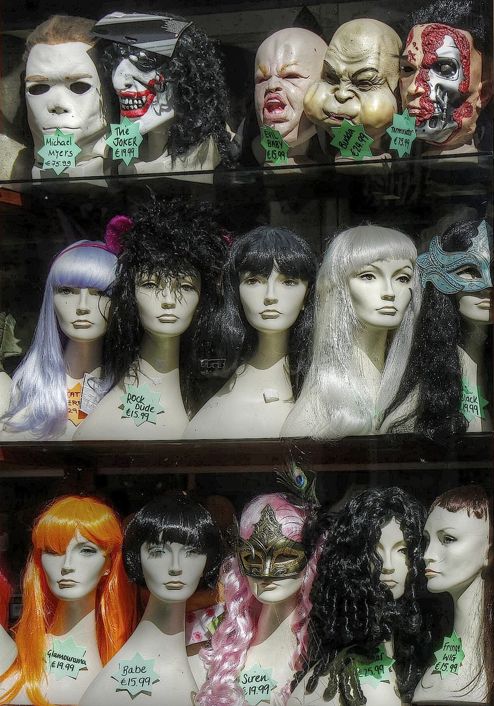
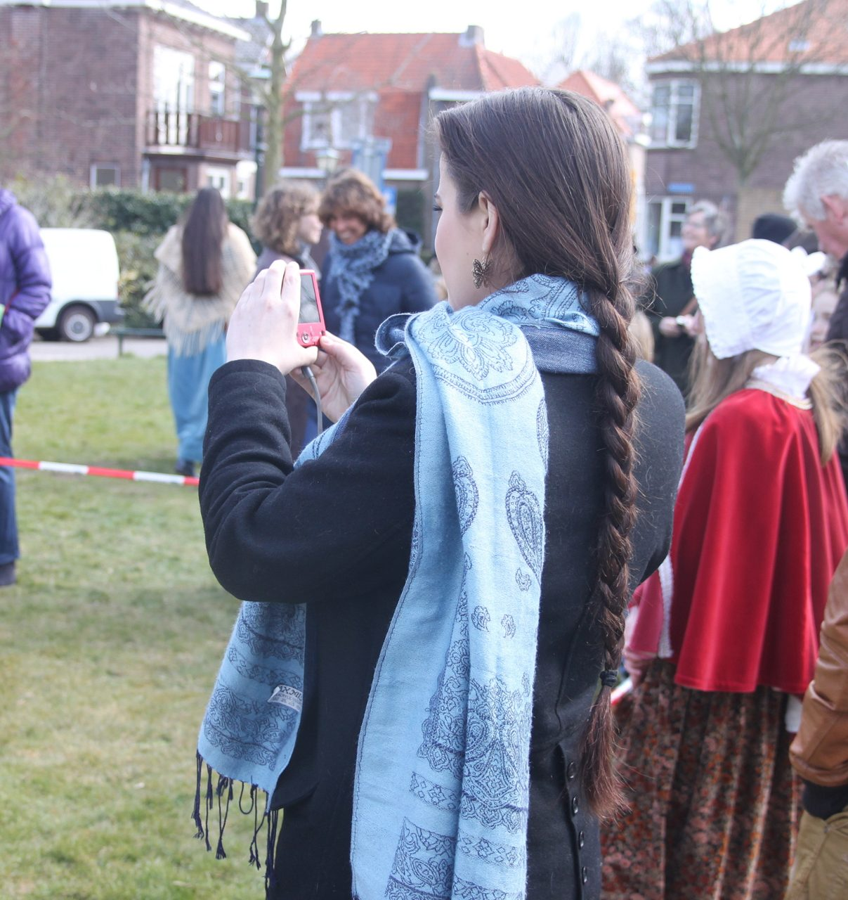

Repair and rejuvenate your wigs. From lace fronts and wefting to wash & sets and cuts - fast, careful work in the heart of Sanhedria / Ramat Eshkol, with house calls available.


Baby hairs, added height, bald spots, adding hair (wefting) and replacing bangs or front hairs.
Lace front repair, replacing a cap, resizing caps bigger or smaller, and sewing in clips and combs.
Keratin treatments, dyeing, rooting and highlighting - handled gently and professionally.
Professional wash & sets plus wig and hair cuts, so your piece looks its best every day.